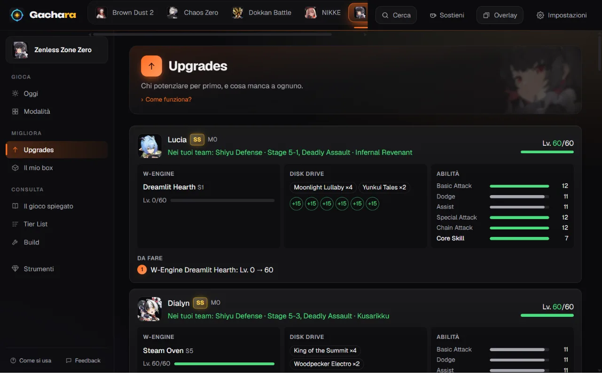

Zenless Zone Zero
Shiyu Defense and Deadly Assault teams from your boxI team di Shiyu Defense e Deadly Assault dal tuo box
Gachara reads your Agents from HoYoLAB's Battle Chronicle, with W-Engine, Disk Drives and skills, and builds a team for every stage with what you have, next to the ones players use most.Gachara legge i tuoi Agenti dal Battle Chronicle di HoYoLAB, con W-Engine, Disk Drive e abilità, e fa un team per ogni stage con quello che hai, accanto a quelli più usati dai giocatori.
Free, no ads, no account needed. For Windows, Android, iPhone and the browser.Gratis, senza pubblicità, senza account obbligatorio. Per Windows, Android, iPhone e browser.

What Gachara does for Zenless Zone ZeroCosa fa Gachara per Zenless Zone Zero
Teams made for your boxTeam su misura per il tuo box
Two plans for Shiyu Defense and Deadly Assault, never repeating an Agent: the most used teams you can build, and one made for your Agents and their build.Due piani per Shiyu Defense e Deadly Assault, senza mai ripetere un Agente: i team più usati che puoi fare, e uno su misura per i tuoi Agenti e la loro build.
What to upgradeCosa potenziare
Each Agent next to its build: W-Engine, Disk Drive sets and levels, skills, with the scores players get with each W-Engine.Ogni Agente accanto alla sua build: W-Engine, set e livelli dei Disk Drive, abilità, con i punteggi che fanno i giocatori con ogni W-Engine.
Pity and Signal Search historyPity e cronologia delle Signal Search
The pity of every channel, Polychrome and Tapes from HoYoLAB, and every pull you made with your 50/50s won and lost.La pity di ogni canale, Polychrome e Tape da HoYoLAB, e tutte le tue pull con i 50/50 vinti e persi.
Daily, events and codesGiornaliere, eventi e codici
The checklist ticks itself from HoYoLAB, events with the Polychrome left to get, banners and redeem codes.La checklist si spunta da sola da HoYoLAB, gli eventi con i Polychrome ancora da prendere, i banner e i codici da riscattare.
Safe for your accountSicura per il tuo account
- Gachara only looks at what the game shows on screen, or at the game's official site the way you would by scrolling it.Gachara guarda solo quello che il gioco mostra sullo schermo, o il sito ufficiale del gioco come faresti tu scorrendolo.
- It never reads the game's memory or its network traffic, and it never plays for you.Non legge mai la memoria del gioco né il suo traffico di rete, e non gioca mai al posto tuo.
Try it with your Zenless Zone Zero boxProvala con il tuo box di Zenless Zone Zero
Install it on Windows, Android or iPhone, or open it in your browser right now. It's free.Installala su Windows, Android o iPhone, o aprila subito nel browser. È gratis.